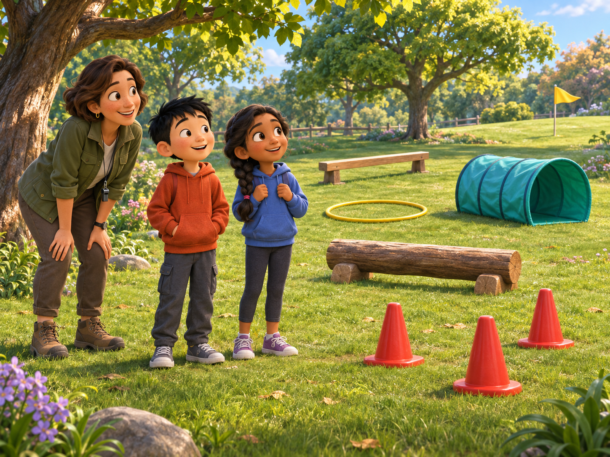

FOUR NEW ADVENTURESA new story.
A new story.
A new discovery.
Choose an adventure, then your reading level.
Read each page, fill the blanks, and answer in your notebook.

E · F · G · L · M · N · P · R
Soap Box Racer
A homemade racer. A loose wheel. A finish worth sharing.
Open story
E · F · G · L · M · N · P · R
Obstacle Course
Over a log. Through a hoop. Can the whole team reach the flag?
Open story
E · F · G · L · M · N · P · R
Canoe Trip
A quiet lake. A changing breeze. Two paddlers learning to work together.
Open story
E · F · G · L · M · N · P · R
Rock Collecting
A tray of treasures. A closer look. What can the children learn from a rock?
Open story